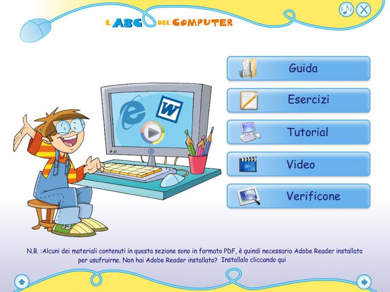
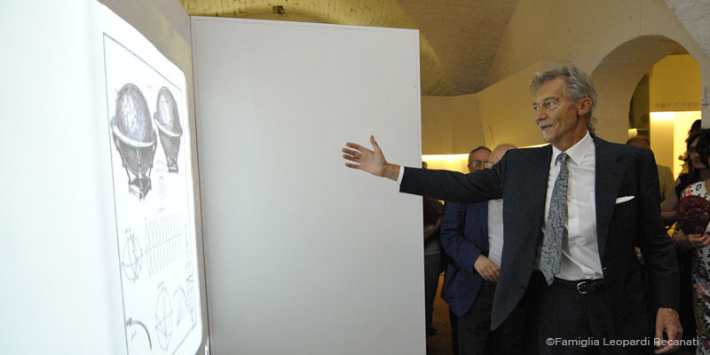

Multimedia

La multimedialità è la compresenza e l'interazione di più mezzi di comunicazione in uno stesso supporto o contesto informativo, come dice la parola stessa multi - media, diversi media si fondono per comunicare in modo più ampio.
Oggi il multimediale è ovunque, dalle applicazioni internet alle comunicazioni di tutti i giorni, ma quando si vuole ottenere il massimo nell'ambito del multimedia si è obbligati ad utilizzare applicazioni stand-alone appositamente progettate e studiate secondo le proprie necessità.
Applicazioni Multimediali
Sono dei supporti che ospitano applicazioni stand-alone, anche molto complesse, che permettono al fruitore di interagire con i contenuti tramite l'utilizzo di un PC (sia che esso sia Windows® che Mac®). Il più delle volte non necessitano di un'installazione locale ed offrono la visione di video, l'interrogazione di documenti e l'interazione con applicazioni o giochi, il tutto tramite un'interfaccia grafica di navigazione personalizzata e molto semplice da utilizzare.
I vostri prodotti o progetti saranno presentati attraverso animazioni e video interattivi
rendendo la navigazione dei contenuti un'esperienza unica divertente ed interessante.
Sappiamo che la presentazione del prodotto è molto importante; pensate ad una applicazione multimediale nata per voi, che rispecchia il vostro stile e comunica tutte quelle cose che sarebbe impossibile esprimere con supporti "monomediali". Sicuramente vi saprà distinguere.
Un vostro progetto in un supporto multimediale potrà rendere disponibili tutti i dati e le informazioni importanti, ma allo stesso tempo potrà passare dalla visione di un video alle immagini di un render 3D, il tutto semplicemente con un clic del mouse o con il semplice tocco. Tutto questo attraverso un'interfaccia grafica semplice e appositamente studiata per aiutare l'utente durante la navigazione dei contenuti. Semplice, no?
Pensiamo alle grandi potenzialità che ha una Applicazione Multimediale nell'ambito della promozione turistica: con i supporti offerti dallo StudioGraficoD2 sarà possibile fare promozione offrendo un vero e proprio tour virtuale interattivo. L'utente potrà muoversi, vedere i luoghi caratteristici della zona in bellissime foto navigabili, che potranno a loro volta, fornire informazioni utili e curiosità. Impossibile proporre una cosa del genere se non con un supporto interattivo e multimediale.

Oggi i supporti multimediali vengono utilizzati anche per la didattica tramite corsi multimediali o manuali interattivi. E' noto, infatti, come i video-tutorial rendano semplice l'utilizzo di applicazioni o apparecchiature complesse, un passo in avanti rispetto a un semplice manuale cartaceo.
StudioGraficoD2 è in grado di realizzare Applicazioni Multimediali didattiche specificatamente pensati per il target di utenza in modo da rendere semplice e stimolante l'apprendimento. Per esempio attraverso semplici giochi interattivi sarà possibile comunicare con un target molto giovane e raccogliere dati sull'apprendimento verificando le competenze acquisite, un feedback molto prezioso per un tutor o un insegnante.
Le installazioni multimediali interattive sono diventate uno strumento importantissimo per musei e spazi espositivi, un approccio unico per fruire documenti altrimenti impossibili da vedere o semplicemente un modo nuovo per incuriosire il visitatore, di vedere un opera o conoscere un evento. StudioGraficoD2 da tempo sviluppa sistemi multimediali interattivi sfruttando le più moderne tecnologie basate su motion capture e human interface.

DVD-Video
Molto spesso si confonde erroneamente il DVD-Video con contenuti speciali con il CD Multimediale vero e proprio. Per la persona inesperta questo a volte è causa di confusione. Il DVD Video è un supporto totalmente diverso dal CD Multimediale, innanzitutto il DVD Video nasce principalmente per la fruizione di video attraverso uno schermo tramite l'apposito lettore di DVD Video (non necessita quindi di un PC).
Proprio per questa sua caratteristica il DVD-Video ha un utilizzo che predilige la parte video e dei menu di navigazioni semplici da utilizzare tramite il telecomando del lettore DVD. Tutto ciò rende questo mezzo di comunicazione adatto a quei contenuti dove il video debba avere una buona qualità e dove non siano presenti documentazioni testuali importanti.
All'azienda che ha bisogno di Video presentazioni aziendali o di prodotto (per fiere o per promozioni) i nostri DVD-Video potranno proporre contenuti speciali, audio multilingua, sottotitoli, menu interattivi e tutto quello che è possibile offrire su un DVD-Video di alto livello. StudioGraficoD2 esegue sia le riprese video sul posto che, a seguire, il montaggio, la post-produzione fino all' authoring del progetto master.
StudioGraficoD2 offre:
- Progettazione e realizzazione di CD/DVD Multimediali
- CD Multimediali per la didattica
- Produzione video tutorial
- Progettazione interfacce di navigazione personalizzate
- Produzione di materiale video / testi / foto per il vostro CD Multimediale
- DVD Video Aziendali
- Video produzione / Post Produzione
- DVD Authoring
- Progettazione TOTEM e KIOSK
- Installazioni Multimediali Museali
- Vetrine Interattive
- Sistemi Motion Capture
- Sistemi Human Interface